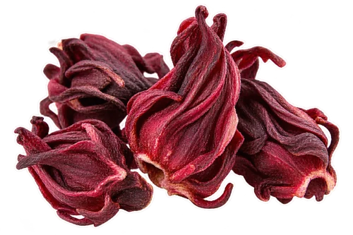
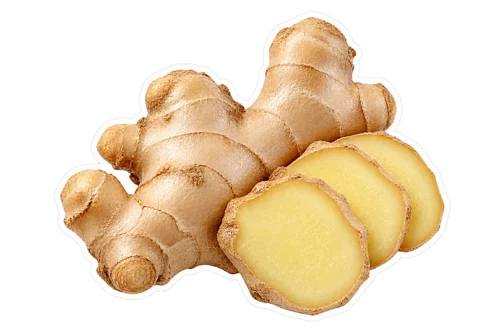

Gather your ingredients
For two cups. The optional additions are yours to choose.

1 tablespoon dried food-grade hibiscus calyces
4 thin slices fresh ginger (about 5 g), washed- 2 cups water (480 ml)
- Optional: 1–2 teaspoons sugar or honey, to taste
How to make it
Rinse and thinly slice the ginger. Measure the dried hibiscus. Choose food-grade dried Hibiscus sabdariffa sold for drinks, not ornamental flowers picked from an unidentified plant.
Put 2 cups of water and the ginger in a small saucepan. Bring to a boil, then lower the heat and gently simmer for 3 minutes.
Turn off the heat. Add the hibiscus, cover, and steep for 5–7 minutes. Start tasting at 5 minutes; the tea should be pleasantly tart, with ginger in the background.
Strain into a heat-safe jug, then divide between two cups. Taste before sweetening. Add a little sweetener if you like, or dilute with a splash of hot water for a gentler cup.
What's in this drink
- Fresh ginger: In a 100 g sample basis, the fresh ginger entry reports 0.226 mg copper and 43 mg magnesium. USDA: Ginger root, raw.
Nutrient figures are per 100 g of the USDA reference ingredient, not per serving.
Nutrients in the herbs, flowers, spices, or fruit are not measured nutrient totals for the strained infusion.
Storage
Cover and refrigerate leftovers promptly. Follow the storage directions on opened packaged ingredients. FoodSafety.gov recommends refrigerating perishable food within two hours, or one hour above 90°F, and keeping the refrigerator at 40°F or below.
Short FAQ
Is this the same as a traditional bissap recipe?
This is our simple hibiscus-and-ginger combination. Hibiscus drinks have many names and regional preparations; this recipe does not claim to represent all of them.
Can I use ground ginger?
Fresh slices are easier to strain and control in this method. Ground ginger will leave sediment and needs a separate adjustment; start with fresh ginger for the recipe as written.
Which hibiscus should I use?
The dried hibiscus used in drinks is the red calyx material, often labeled hibiscus, roselle, or flor de jamaica. Check that the product is intended for food use. Its crinkled burgundy appearance is different from a large open ornamental hibiscus flower.